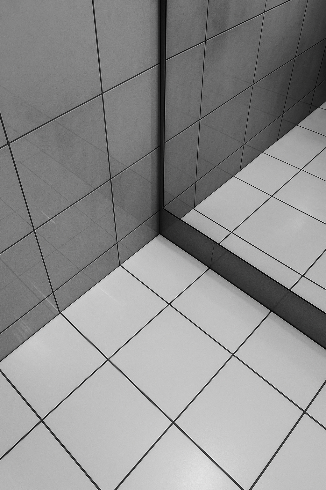
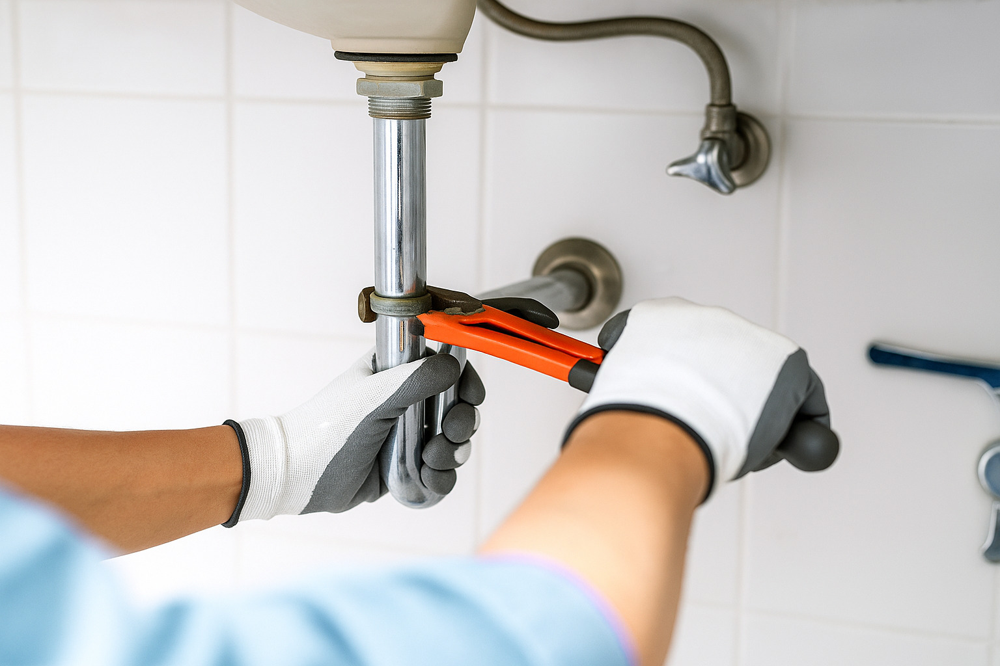
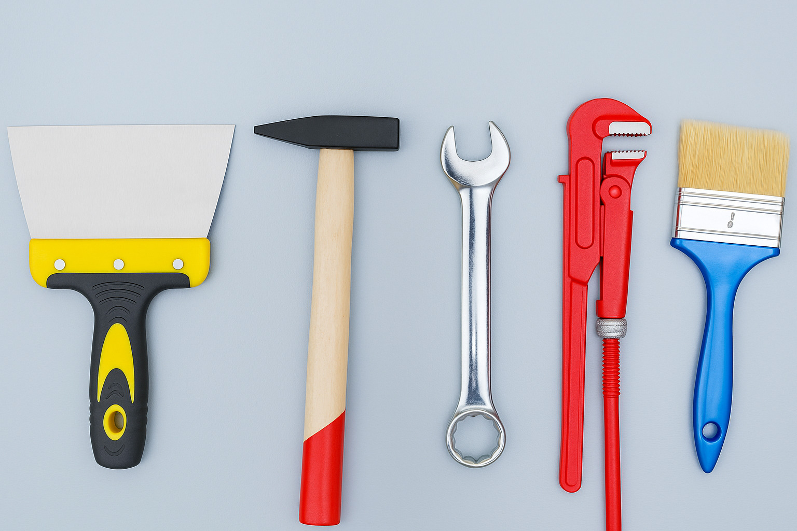
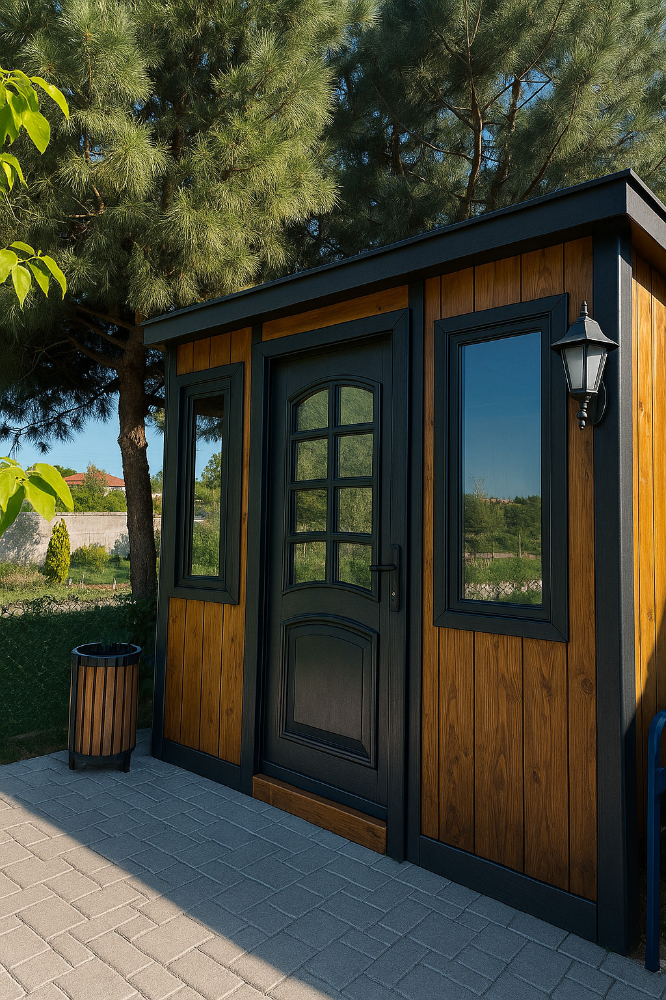
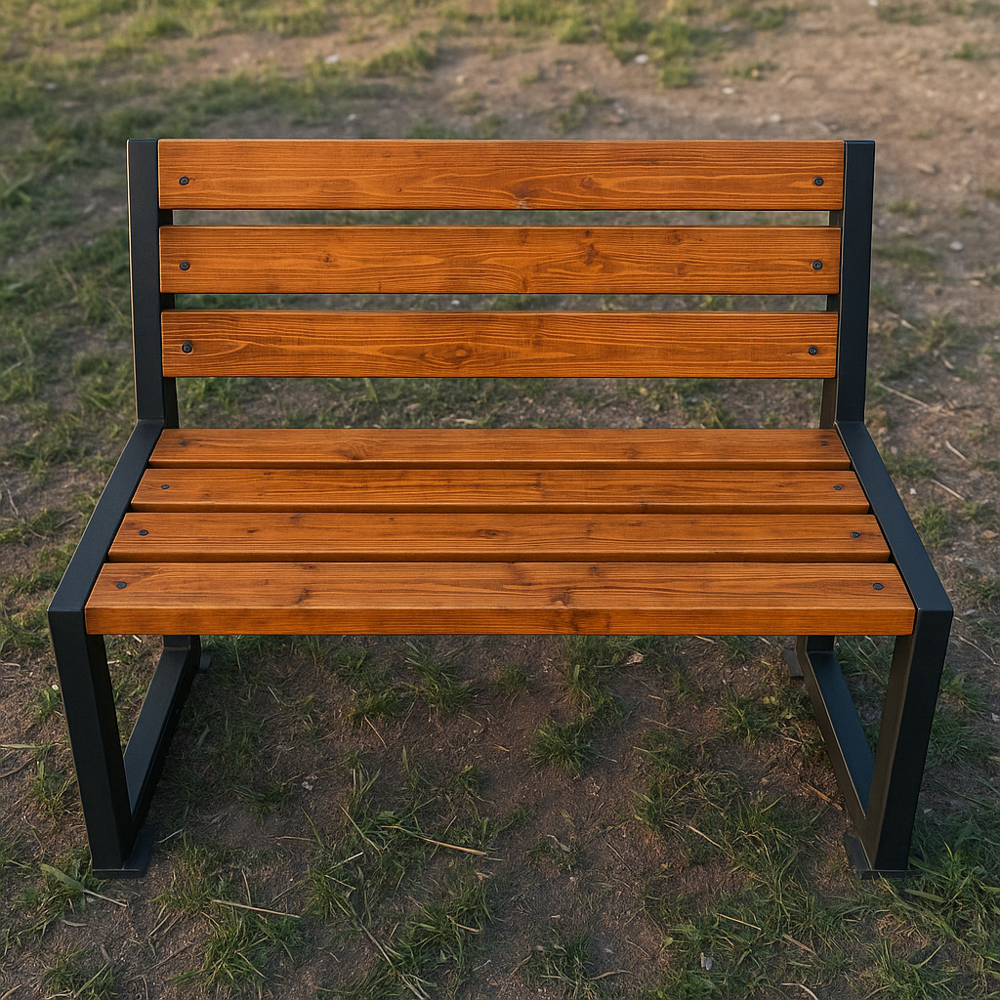
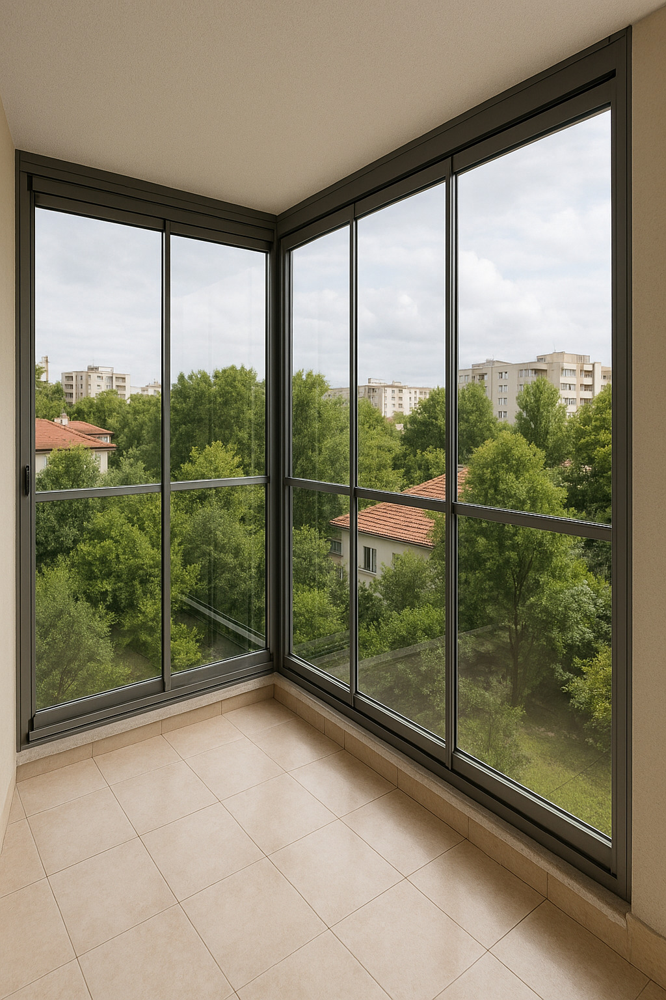
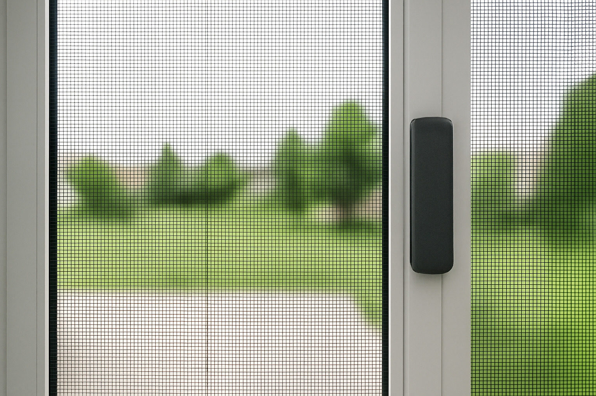

Boya / Badana
Kaliteli iç ve dış cephe boyama hizmetleri sunuyoruz.
Boyama öncesi zemin hazırlığı, uygun astar ve boya seçimi ile uzun
ömürlü uygulamalar sağlanır.

Fayans Seramik
Zemin ve duvarlar için şık seramik çözümleri.
Banyo, mutfak gibi alanlara estetik kazandıran, hijyenik ve dayanıklı
seramik kaplamalar sunarız.

Kara Sıva
Duvarlarınız için dayanıklı sıva işlemleri.
Yüzeyin düzgün hale gelmesi için ilk kat olarak uygulanan dayanıklı
sıva işlemidir.

Su Tesisatı
Ev ve iş yerleriniz için profesyonel tesisat çözümleri.
Temiz su ve atık su tesisatı kurulum, bakım ve onarım işlemleri uzman
ekiplerimiz tarafından yapılır.

Alçı Sıva
Dekoratif ve düzgün yüzeyler için alçı uygulaması.
İç mekanlarda estetik ve düzgün yüzeyler için tercih edilen kolay
uygulanabilir bir sıva çeşididir.

Ahşap Piknik Masası
Doğal ahşaptan üretilmiş, sağlam yapısı ve şık tasarımıyla bahçe ve açık alanlar için ideal
piknik masasıdır.
Doğal ahşaptan üretilmiş, sağlam yapısı ve şık tasarımıyla bahçe ve
açık alanlar için ideal
piknik masasıdır.

Tamirat & Tadilat
Her türlü onarım ve yenileme işlemi.
Kapı, pencere, tesisat, zemin ve duvar onarımları dahil olmak üzere
her alanda tamirat hizmeti sunarız.

Ahşap Kamelya
Bahçenize şıklık ve gölge sağlayan estetik kamelya modelleri.
Dayanıklı ahşap malzeme ile üretilmiş, oturma alanı ve masa içeren, uzun ömürlü kamelya kurulumu
yapılır.

Mutfak Tadilatı
Modern ve işlevsel mutfaklar için yenileme.
Dolap değişimi, tezgah, lavabo, musluk ve zemin kaplama gibi
yeniliklerle mutfağınızı baştan yaratıyoruz.

Televizyon Ünitesi
Ev dekorasyonunuza uygun özel TV üniteleri.
TV alanınıza uygun ölçülerde, fonksiyonel ve dekoratif özel üretim TV
üniteleri tasarlanır.

Bahçe Kulübesi
Bahçeleriniz için estetik yapılar.
Dayanıklı, şık ve cam detaylı modern bahçe kulübesi. Depolama ya da
hobi alanı için ideal.
Su Tesisatı
Ev ve iş yerleriniz için profesyonel tesisat çözümleri.
Temiz su ve atık su tesisatı kurulum, bakım ve onarım işlemleri uzman
ekiplerimiz tarafından yapılır.
Panjur
Pencere ve kapılarınız için güvenlik ve estetik sağlayan panjur sistemleri.
Isı ve ses yalıtımı sağlayan manuel ve motorlu panjur seçenekleri
sunuyoruz.
Alüminyum Doğrama
Dayanıklı ve estetik alüminyum doğrama sistemleri.
Kapı, pencere ve cephe sistemlerinde modern çözümler sunan doğramalar
uygulanır.

Bank
Dış mekanlar için şık ve dayanıklı oturma alanları.
Ahşap ve metal seçenekleriyle bahçe, park ve kamusal alanlar için
bank üretimi.

Küpeşte
Merdiven ve balkonlar için güvenlik ve estetik sağlayan küpeşte sistemleri.
Paslanmaz, alüminyum ve cam küpeşte uygulamaları profesyonelce
yapılır.

Marangoz Ustası
Mobilya üretimi ve onarımı için usta çözümler.
Özel ölçüye uygun masa, dolap, raf gibi tüm marangozluk işleriniz
titizlikle yapılır.

Şifon Yer
Fonksiyonel ve dekoratif şifonyer tasarımları.
Yatak odası ve salonlar için tasarım ve ölçüye uygun şifonyer imalatı
yapılır.

Çelik Kapı
Güvenliğiniz için yüksek dayanımlı çelik kapılar.
Yangına dayanıklı, hırsızlığa karşı güvenli çelik kapılar üretiyoruz.

Cam Balkon
Manzaranızdan ödün vermeden koruma sağlayan cam balkon sistemleri.
Isı ve ses yalıtımı sağlayan, sürgülü cam balkon sistemleri montajı
yapılır.

Ahşap Çöp Kovası
Doğal ve estetik ahşap çöp kovaları.
Bahçe ve parklar için özel üretim, dayanıklı ve çevreye uyumlu çöp
kovaları.

Sineklik
Kapı ve pencereleriniz için sinek geçirmez çözümler.
Sabit, menteşeli veya sürgülü sineklik sistemleri ile konforlu yaşam
alanları sunuyoruz.

Mutfak Dolabı
Estetik ve işlevsel özel tasarım mutfak dolapları.
Mutfaklarınız için ölçüye ve zevke özel, dayanıklı ve şık mutfak
dolapları üretimi yapılır.
Duşakabin
Banyonuz için estetik ve fonksiyonel duşakabin çözümleri.
Cam veya plastik panelli, sızdırmaz yapıya sahip modern duşakabin
sistemleri kurulumu yapılır.